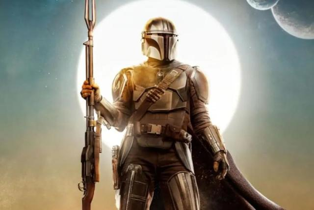
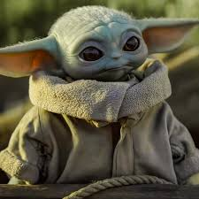

Año de Estreno: 2019
País de Origen: Estados Unidos
Género: Ciencia Ficción, Fantasía y Acción
Creador: Jon Favreau
Sinopsis: La historia sigue a un Mandaloriano que es cazarrecompensas al cual le encargan un contrato que cambiará el rumbo de sus aventuras.
| Nombre | Imagen | Descripción |
|---|---|---|
| Din Djarin |  | Un cazarrecompensas mandaloriano que se embarca en aventuras en la galaxia mientras protege a un niño sensible a la Fuerza conocido como "Grogu" o "Baby Yoda". |
| Grogu(Baby Joda) |  | Un misterioso niño de la misma especie que Yoda, sensible a la Fuerza, que es protegido por el Mandaloriano. |